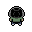
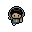
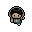
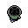
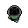

Mini-Josué Pixel Art Showcase
Visor interactivo de sprites y guía de diseño estilo Pokémon Gen 3 / Mario
Animación Interactiva en Vivo (Walk Cycles & Poses)
Colección Completa de Sprites (32x32 píxeles)
✓ 8 Frames Oficiales
idle.png
Reposo / 3/4
front.png
Primer plano / Habla

jump.png
Salto / Salida de foto

back.png
Espalda (Reposo)

walk-1.png
Paso frente 1

walk-2.png
Paso frente 2

back-walk-1.png
Paso espalda 1

back-walk-2.png
Paso espalda 2
🎮 Sistema de Animación Retro Implementado
1. Sprites Completados
Se completó la suite con las 8 poses en 32x32: Idle, Front, Jump, Back y los ciclos de caminata frontal y de espaldas.
2. Integración en Portfolio
El personaje acompaña en el Adventure Mode saltando desde la foto de perfil al riel lateral derecho y reaccionando a los diálogos.
3. Caminata Bidireccional
Con los frames de espalda listos, el companion puede caminar de espaldas al scrollear hacia arriba como en los clásicos de GBA.